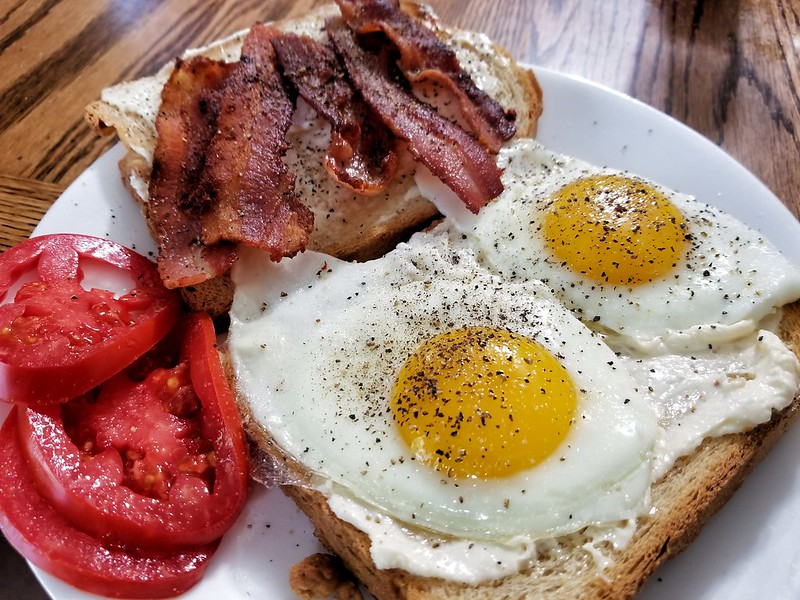

Calcifer’s Breakfast – Howl’s Moving Castle

Calcifer’s Breakfast from Howl’s Moving Castle is an
iconic American breakfast with a supernatural twist – bacon and eggs
cooked with the help of a demonic fire called Calcifer. You may not have a
magical co-chef, but you can still whip up this hearty breakfast in just 3
steps.
Tip:Add bread, tomatoes and caramelised onions for an
even more indulgent breakfast.

Ingredients:
- 3 thickly cut bacon slices
- 6 eggs
Ingredients for add-ons, optional:
- 1 large onion
- Sourdough bread
- 1 tsp of thyme
- 1 tsp salt
- Some slices of tomatoes
- 1 tbsp red wine vinegar
Steps:
-
Heat the frying pan on low heat and fry the bacon until golden brown.
-
Move the bacon to a corner of the pan and fry 6 eggs on low heat as
well.
- Serve when the eggs are fried to your preferred doneness.
Optional steps:
- Chop and mince the onion.
-
Heat the frying pan on medium heat and fry the minced onions till
translucent. Add a few slices of tomatoes.
-
Season with thyme, salt, and red wine vinegar and fry for 1 minute.
-
Serve together with the eggs, bacon, tomatoes, and sourdough bread.